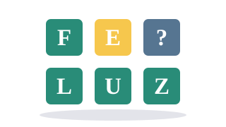
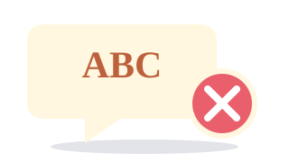

AVENTURA 01 Sin límite de tiempo
Sin límite de tiempo
Sin límite de tiempoBúsqueda
Esgrima Bíblico
Referencias de toda la Biblia. Sin reloj: tú eliges al ganador y cuándo terminar.
¡Jugar Esgrima! ↗UN GRAN PLAN PARA APRENDER JUNTOS
Historias que inspiran, retos que nos conectan y un equipo
lleno de ideas. ¡Hoy la clase se convierte en una aventura!
Una historia por descubrir
¡Juntos encontramos la respuesta!ANTES DE LA PRIMERA RONDA
Elige la cantidad de equipos, ponles nombre y prepara la clase.
EL SIGUIENTE DESCUBRIMIENTO LOS ESPERA
Elige una aventura. Todos tienen algo que aportar.
Sin límite de tiempoBúsqueda
Referencias de toda la Biblia. Sin reloj: tú eliges al ganador y cuándo terminar.
¡Jugar Esgrima! ↗Vocabulario
Personajes, lugares y objetos escondidos. Descúbranlos una letra a la vez.
¡Jugar Ahorcado! ↗Memoria
Ordenen las fichas y reconstruyan el versículo antes de que termine el tiempo.
¡Armar el texto! ↗Personajes
Escuchen la frase, miren las dos opciones y descubran quién está detrás de esas palabras.
¡Jugar ahora! ↗Tipo Wordle
Cada intento deja una pista. Conecten las letras hasta descubrir la palabra bíblica.
¡Jugar ahora! ↗
◷ 90 s por equipoExpresión
Uno de espaldas, todos dando pistas. ¡Adivinen tantas respuestas bíblicas como puedan en 90 segundos!
¡Jugar ahora! ↗Deducción
Lean con atención: hay detalles que no pertenecen al relato. ¡Encuentren las pruebas!
¡Jugar ahora! ↗ ◷ Reto avanzado
◷ Reto avanzadoOPCIÓN MÚLTIPLE
20 preguntas avanzadas por equipo. Configura integrantes, conversa y supera el reto.
¡Jugar ahora! ↗Escuchamos, compartimos y celebramos cada intento. Ganar juntos también es aprender.